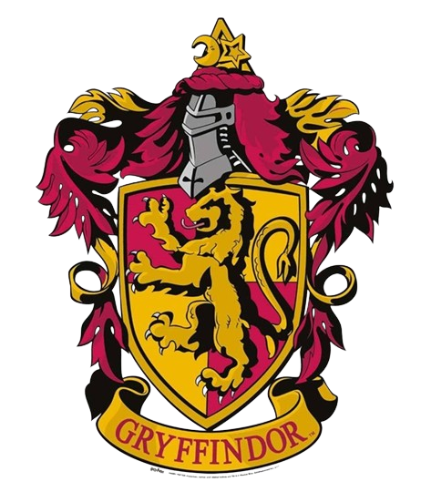
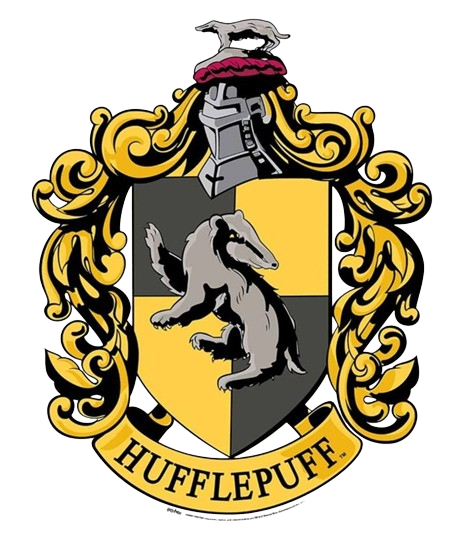
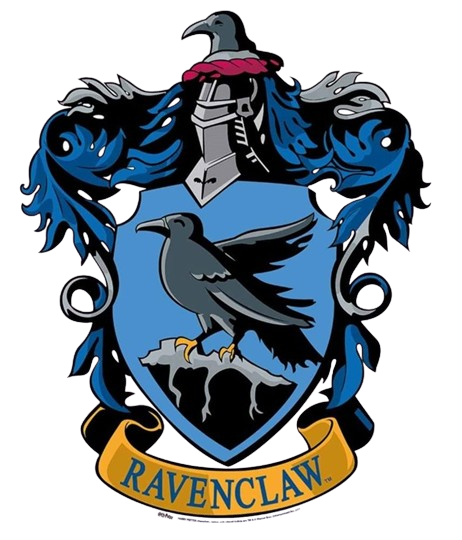
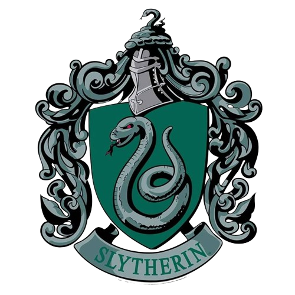

Bienvenidos a la web mágica de

Aquí, los fanáticos del mundo mágico pueden sumergirse en todo lo relacionado con Hogwarts y más allá. Explora la grandeza de las casas: valientes como los Gryffindor, astutos como los Slytherin, inteligentes como los Ravenclaw y leales como los Hufflepuff. No te pierdas la emoción del deporte más famoso del mundo mágico, el Quidditch, donde los equipos compiten a gran velocidad en busca de la codiciada Snitch dorada. Prepárate para una aventura mágica llena de descubrimientos y sorpresas. ¡Que comience la magia!
Gryffindor
Fundada por Godric Gryffindor, esta casa valora el coraje, la valentía, la determinación y el espíritu caballeresco. Sus miembros se caracterizan por ser valientes y audaces, dispuestos a enfrentarse a cualquier desafío. El símbolo de Gryffindor es un león, y sus colores son el rojo y el dorado.
Hufflepuff
Creada por Helga Hufflepuff, esta casa aprecia la lealtad, la paciencia, el trabajo duro y la justicia. Los Hufflepuff son conocidos por ser amigables, justos y trabajadores, siempre dispuestos a ayudar a los demás. El símbolo de Hufflepuff es un tejón, y sus colores son el amarillo y el negro.
Ravenclaw
Fundada por Rowena Ravenclaw, esta casa valora la inteligencia, el conocimiento, la sabiduría y el ingenio. Sus integrantes son curiosos, académicos y creativos, siempre buscando aprender y descubrir nuevas cosas. El símbolo de Ravenclaw es un águila, y sus colores son el azul y el bronce.
Slytherin
Establecida por Salazar Slytherin, esta casa valora la ambición, la astucia, el liderazgo y la determinación. Los Slytherin son astutos, estratégicos y a menudo buscan tener éxito. El símbolo de Slytherin es una serpiente, y sus colores son el verde y el plateado.
¡DESCUBRE A QUE CASA PERTENECES!
¿Te has preguntado alguna vez a qué casa de Hogwarts perteneces? ¡Descubre tu casa y únete a la magia! Haz clic en el siguiente enlace para averiguarlo.
The Wizarding WorldTodo lo que tenes que saber sobre el Quidditch
El Quidditch es el deporte mágico por excelencia del mundo de Harry Potter, donde los jugadores vuelan en escobas y la emoción está garantizada. Con equipos de siete, los cazadores buscan anotar con la quaffle, los golpeadores repelen las traviesas bludgers y el guardián protege los aros. Pero la verdadera magia viene cuando el buscador atrapa la snitch dorada, una pequeña bola con alas que vale 150 puntos y generalmente decide el partido. Además, es el deporte más popular entre magos y brujas, ¡y J.K. Rowling lo creó mezclando un montón de deportes muggles! Si alguna vez soñaste con volar en una escoba y vivir aventuras, el Quidditch es tu deporte.